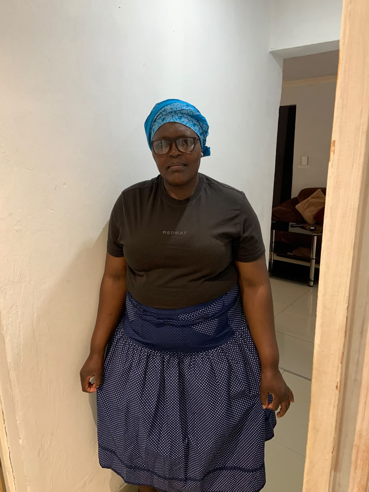
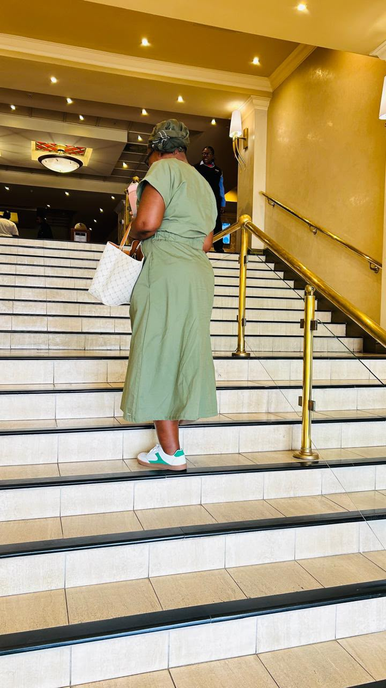

My family is my foundation. We grew up in Elliotdale with love, respect and Ubuntu. They are the reason I am studying ICT at Walter Sisulu University.

My Mother
MY BIGGEST SUPPORTER
Mama, you are my everything. Your love, your prayers, and your daily sacrifices made me who I am today. Every time I feel like giving up on my studies, I remember your strength and your words: "Education will change our story". Thank you for believing in me when no one else did. I love you endlessly, Mama wam.

My Late Aunt
FOREVER IN MY HEART
To my beloved aunt, though you are no longer here physically, your spirit lives in me every day. You taught me discipline, respect, and to never give up on my dreams. Your wisdom still guides me at university. I miss your smile and advice. Continue resting in peace, my angel — I promise to make you proud.
My Siblings
MY BEST FRIENDS FOR LIFE
We grew up together in Elliotdale — sharing one plate, one blanket, and big dreams. You are not just my siblings, you are my best friends, my protectors, and my laugh. We fight, we forgive, we support each other. No matter where life takes us, we will always have each other's backs. I love you all.
My Cousins
FAMILY BOND FOREVER
To my amazing cousins — thank you for the childhood memories, the jokes, the secrets, and the unconditional love. Growing up with you felt like having extra brothers and sisters. You taught me what true family bond means. Even when we are far apart, our connection stays strong. Cousins by blood, friends by choice.
Family Values
WHAT WE BELIEVE
Our home is built on four pillars that my mother and aunt taught us:
Love — We love without conditions. Respect — We respect elders and each other. Education — We believe education is the key to change our future. Ubuntu — "Umntu ngumntu ngabantu" — I am because we are. We never leave each other behind.